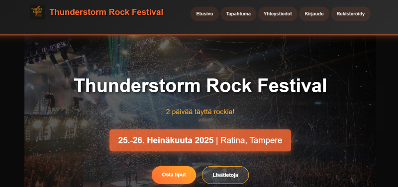

Projektit
WordPress-kehitysharjoittelu
Kahden kuukauden harjoittelu kuuden asiakassivuston parissa. Responsiivista hienosäätöä, GDPR-toteutuksia, suorituskyvyn optimointia ja teemapäivityksiä.

Portfolio-sivusto
Moderni, kaksikielinen portfolio sulavilla animaatioilla ja yhteydenottolomakkeella.

Web-sivut
Näyttötyö maalausyritykselle väritestaustyökalulla ja Bootstrap-karusellilla.

Thunderstorm Rock Festival
Full-stack PHP-tapahtumienhallintajärjestelmä turvallisella autentikoinnilla, admin-dashboardilla ja ilmoittautumisjärjestelmällä.